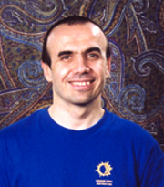

"...whether young, old or too old, sick or lean, one who discards laziness, gets success if he practices Yoga."
--- Hatha Yoga Pradipika,
translation by Muktibodhananda Saraswati
I practice and teach Bishnu Yoga®, which is rooted in the Bikram/Bishnu Ghosh Yoga Tradition from Calcutta, India.
Bishnu Yoga® Series is scientifically designed to work on the entire body in a balanced and thorough fashion, developing strength,
flexibility, balance and the power of concentration.
Based on the same 26 yoga exercises as Bikram Yoga, it is a whole body yoga workout, developing and maintaining internal physical fitness and
health.
Faithful and correct practice of this yoga keeps the body young and healthy all life long, free of old age symptoms and conditions.
This yoga method will bring sure and definite results to those who practice in a steady, regular and long-term fashion.
A little bit about me. My name is Sasha. I was the person to Pioneer the Hot Yoga Movement in Canada, by introducing Bikram Yoga to
Toronto, Canada in 1992. I have owned and operated Canada's oldest Hot Yoga studio for over 25 years, accumulating over 30,000 hours of daily teaching
and over 15,000 hours of daily personal practice.
From my extensive personal experience I can tell you that this yoga works wonders!

Currently I offer yoga classes online (www.whereby.com/sasha-yoga) and in-person (Winnipeg, Manitoba).
Why should you consider taking these classes?
Here is why:
* Emphasis is on Quality over Quantity.
* My yoga instruction is No Nonsense and Goal Oriented.
* Class fees are flexible and very affordable.
* I deliver calm and expert "down to earth" yoga instruction, with some humour here and there. :-)
* This is the Best Of Yoga for Therapy and Fitness, the Bishnu Ghosh Yoga Tradition.
* Maximum personal attention and relaxed pace.
* Schedule class hours that are convenient for you.
* Practice in the comfort and privacy of your home.
* Avoid the stress and cost of transportation and travel.
* Maximize personal free time gained.
* Classes customized for you.
* I teach that function is more important than looks.
* Step-by-step personal instruction and corrections to keep your yoga practice safe and productive.
Namaste!